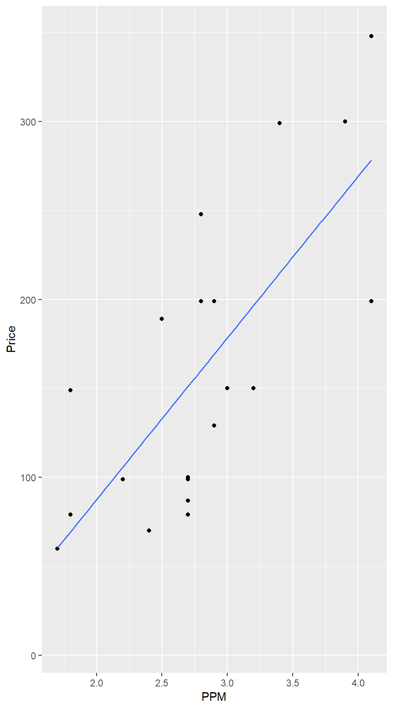
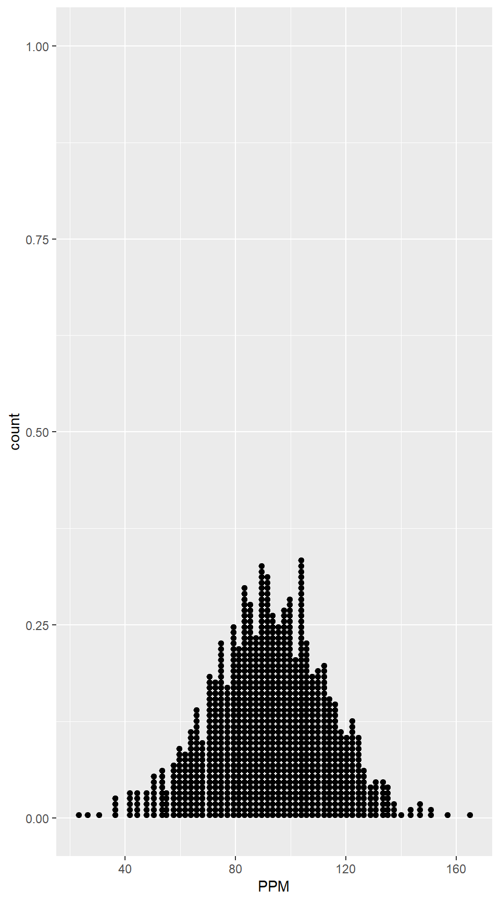
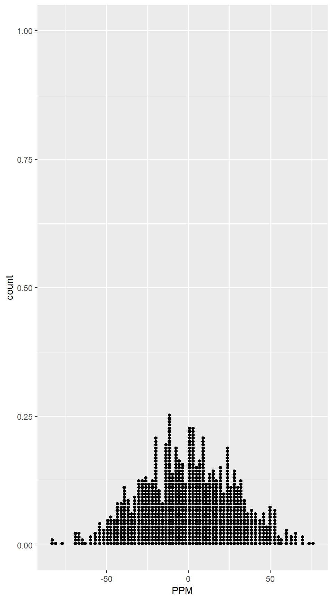
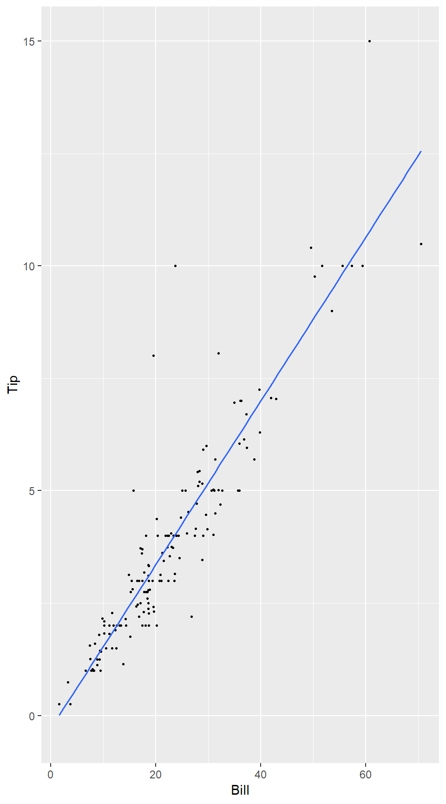
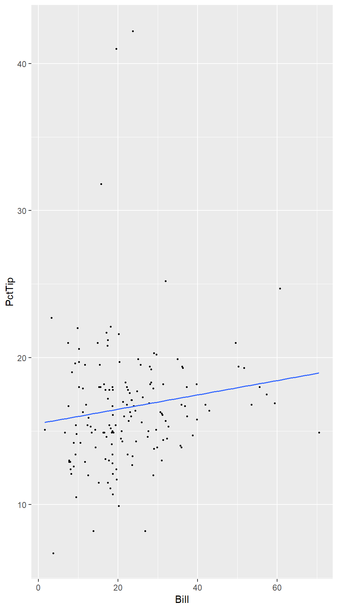
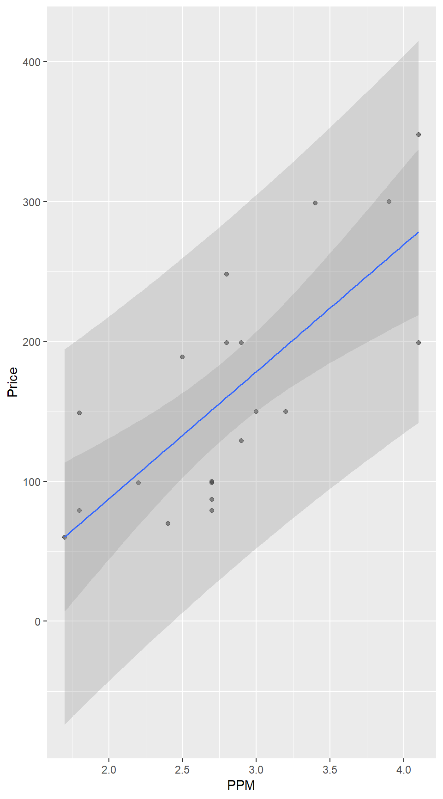

9 Inference for Regression
9.1 Inference for Slope and Correlation
Simple Linear Model
\[ Y = \beta_0 + \beta_1 x + \epsilon \qquad \mbox{where $\epsilon \sim Norm(0, \sigma)$.} \]
In other words:
The mean response for a given predictor value \(x\) is given by a linear formula \[ \mbox{mean response} = \beta_0 + \beta_1 x \]
The distribution of all responses for a given predictor value \(x\) is normal.
The standard deviation of the responses is the same for each predictor value.
One of the goals in simple linear regression is to estimate this linear relationship – that is to estimate the intercept and the slope.
Of course, there are lots of lines. We want to determine the line that fits the data best. But what does that mean?
The usual method is called the method of least squares and chooses the line that has the _ smallest possible sum of squares of residuals_, where residuals are defined by
\[ \mbox{residual} = \mbox{observed response} - \mbox{predicted response} \]
For a line with equation \(y = b_0 + b_1 x\), this would be \[ e_i = y_i - (b_0 + b_1 x) \]
Simple calculus (that you don’t need to know) allows us to compute the best
\(b_0\) and \(b_1\) possible. These best values define the least squares regression line.
Fortunately, statistical software packages do all this work for us. In R
the command that does this is lm().
Example 9.1
lm(Price ~ PPM, data = InkjetPrinters)##
## Call:
## lm(formula = Price ~ PPM, data = InkjetPrinters)
##
## Coefficients:
## (Intercept) PPM
## -94.22 90.88You can get terser output with
coef(lm(Price ~ PPM, data = InkjetPrinters))## (Intercept) PPM
## -94.22176 90.87807You can also get more information with
msummary(lm(Price ~ PPM, data = InkjetPrinters))## Estimate Std. Error t value Pr(>|t|)
## (Intercept) -94.22 56.40 -1.671 0.112086
## PPM 90.88 19.49 4.663 0.000193 ***
##
## Residual standard error: 58.55 on 18 degrees of freedom
## Multiple R-squared: 0.5471, Adjusted R-squared: 0.522
## F-statistic: 21.75 on 1 and 18 DF, p-value: 0.0001934So our regression equation is
\[ \widehat{\mbox{Price}} = -94.2217606 + 90.8780677 \cdot \mbox{PPM} \]
For example, this suggests that the average price for inkjet printers that print 3 pages per minute is \[ \widehat{\mbox{Price}} = -94.2217606 + 90.8780677 \cdot \mbox{3.0} = 178.4124425 \]
Inference for Slope
Figure 9.1
gf_point(Price ~ PPM, data = InkjetPrinters) %>% gf_lm()
Figure 9.2
Boot.Ink <- do(1000) * lm(Price ~ PPM, data = resample(InkjetPrinters))
favstats( ~ PPM, data = Boot.Ink)## min Q1 median Q3 max mean sd n missing
## 23.16786 79.03896 92.14894 105.6885 164.7333 92.19 20.75733 1000 0gf_dotplot( ~ PPM, binwidth = 2, data = Boot.Ink)
Rand.Ink <- do(1000) * lm(Price ~ shuffle(PPM), data = InkjetPrinters)
favstats( ~ PPM, data = Rand.Ink)## min Q1 median Q3 max mean sd n
## -83.35051 -20.31245 -0.235998 19.52745 75.97585 -0.8119218 28.27206 1000
## missing
## 0gf_dotplot( ~ PPM, binwidth = 2, data = Rand.Ink)
Example 9.2
msummary(lm(Price ~ PPM, data = InkjetPrinters)) ## Estimate Std. Error t value Pr(>|t|)
## (Intercept) -94.22 56.40 -1.671 0.112086
## PPM 90.88 19.49 4.663 0.000193 ***
##
## Residual standard error: 58.55 on 18 degrees of freedom
## Multiple R-squared: 0.5471, Adjusted R-squared: 0.522
## F-statistic: 21.75 on 1 and 18 DF, p-value: 0.0001934confint(lm(Price ~ PPM, data = InkjetPrinters) , "PPM")## 2.5 % 97.5 %
## PPM 49.93604 131.8201Example 9.3
head(RestaurantTips)## Bill Tip Credit Guests Day Server PctTip CreditCard
## 1 23.70 10.00 n 2 Fri A 42.2 No
## 2 36.11 7.00 n 3 Fri B 19.4 No
## 3 31.99 5.01 y 2 Fri A 15.7 Yes
## 4 17.39 3.61 y 2 Fri B 20.8 Yes
## 5 15.41 3.00 n 2 Fri B 19.5 No
## 6 18.62 2.50 n 2 Fri A 13.4 Nosummary(lm(Tip ~ Bill, data = RestaurantTips)) ##
## Call:
## lm(formula = Tip ~ Bill, data = RestaurantTips)
##
## Residuals:
## Min 1Q Median 3Q Max
## -2.3911 -0.4891 -0.1108 0.2839 5.9738
##
## Coefficients:
## Estimate Std. Error t value Pr(>|t|)
## (Intercept) -0.292267 0.166160 -1.759 0.0806 .
## Bill 0.182215 0.006451 28.247 <2e-16 ***
## ---
## Signif. codes: 0 '***' 0.001 '**' 0.01 '*' 0.05 '.' 0.1 ' ' 1
##
## Residual standard error: 0.9795 on 155 degrees of freedom
## Multiple R-squared: 0.8373, Adjusted R-squared: 0.8363
## F-statistic: 797.9 on 1 and 155 DF, p-value: < 2.2e-16confint(lm(Tip ~ Bill, data = RestaurantTips) , "Bill", level = 0.90)## 5 % 95 %
## Bill 0.1715402 0.1928893Example 9.4
- \(H_0\): \(\beta_1 = 0\); \(H_a\): \(\beta_1 \neq 0\)
- Test statistic: \(b_1 = 0.0488\) (sample slope)
- t-test for slope:
msummary(lm(PctTip ~ Bill, data = RestaurantTips)) ## Estimate Std. Error t value Pr(>|t|)
## (Intercept) 15.50965 0.73956 20.97 <2e-16 ***
## Bill 0.04881 0.02871 1.70 0.0911 .
##
## Residual standard error: 4.36 on 155 degrees of freedom
## Multiple R-squared: 0.01831, Adjusted R-squared: 0.01197
## F-statistic: 2.89 on 1 and 155 DF, p-value: 0.09112t-Test for Correlation
Example 9.5
summary(lm(CostBW ~ PPM, data = InkjetPrinters)) ##
## Call:
## lm(formula = CostBW ~ PPM, data = InkjetPrinters)
##
## Residuals:
## Min 1Q Median 3Q Max
## -2.1383 -0.7288 -0.3365 0.5315 3.8066
##
## Coefficients:
## Estimate Std. Error t value Pr(>|t|)
## (Intercept) 8.6829 1.2839 6.763 2.46e-06 ***
## PPM -1.5517 0.4436 -3.498 0.00257 **
## ---
## Signif. codes: 0 '***' 0.001 '**' 0.01 '*' 0.05 '.' 0.1 ' ' 1
##
## Residual standard error: 1.333 on 18 degrees of freedom
## Multiple R-squared: 0.4046, Adjusted R-squared: 0.3715
## F-statistic: 12.23 on 1 and 18 DF, p-value: 0.002571Example 9.6
msummary(lm(PctTip ~ Bill, data = RestaurantTips)) ## Estimate Std. Error t value Pr(>|t|)
## (Intercept) 15.50965 0.73956 20.97 <2e-16 ***
## Bill 0.04881 0.02871 1.70 0.0911 .
##
## Residual standard error: 4.36 on 155 degrees of freedom
## Multiple R-squared: 0.01831, Adjusted R-squared: 0.01197
## F-statistic: 2.89 on 1 and 155 DF, p-value: 0.09112Coefficient of Determination: R-squared
Example 9.7
msummary(lm(Price ~ PPM, data = InkjetPrinters))## Estimate Std. Error t value Pr(>|t|)
## (Intercept) -94.22 56.40 -1.671 0.112086
## PPM 90.88 19.49 4.663 0.000193 ***
##
## Residual standard error: 58.55 on 18 degrees of freedom
## Multiple R-squared: 0.5471, Adjusted R-squared: 0.522
## F-statistic: 21.75 on 1 and 18 DF, p-value: 0.0001934Checking Conditions for a Simple Linear Model
Example 9.9
gf_point(Tip ~ Bill, data = RestaurantTips, cex = 0.5) %>% gf_lm()
gf_point(PctTip ~ Bill, data = RestaurantTips, cex = 0.5) %>% gf_lm()
9.2 ANOVA for Regression
Partitioning Variability
We can also think about regression as a way to analyze the variability in the response. This is a lot like the ANOVA tables we have seen before. This time:
\(SST\) = \(\sum (y - \overline{y})^2\)
\(SSE\) = \(\sum (y - \hat{y})^2\)
\(SSM\) = \(\sum (\hat{y} - \overline{y})^2\)
\(SST\) = \(SSM\) + \(SSE\)
As before, when \(SSM\) is large and \(SSE\) is small, then the model (\(\hat y = \hat\beta_0 + \hat\beta_1 x\)) explains a lot of the variability and little is left unexplained (\(SSE\)). On the other hand, if \(SSM\) is small and \(SSE\) is large, then the model explains only a little of the variability and most of it is due to things not explained by the model.
Example 9.10
summary(lm(Calories ~ Sugars, data = Cereal))##
## Call:
## lm(formula = Calories ~ Sugars, data = Cereal)
##
## Residuals:
## Min 1Q Median 3Q Max
## -36.574 -25.282 -2.549 17.796 51.805
##
## Coefficients:
## Estimate Std. Error t value Pr(>|t|)
## (Intercept) 88.9204 10.8120 8.224 5.96e-09 ***
## Sugars 4.3103 0.9269 4.650 7.22e-05 ***
## ---
## Signif. codes: 0 '***' 0.001 '**' 0.01 '*' 0.05 '.' 0.1 ' ' 1
##
## Residual standard error: 26.61 on 28 degrees of freedom
## Multiple R-squared: 0.4357, Adjusted R-squared: 0.4156
## F-statistic: 21.62 on 1 and 28 DF, p-value: 7.217e-05anova(lm(Calories ~ Sugars, data = Cereal))## Analysis of Variance Table
##
## Response: Calories
## Df Sum Sq Mean Sq F value Pr(>F)
## Sugars 1 15316 15316.5 21.623 7.217e-05 ***
## Residuals 28 19834 708.3
## ---
## Signif. codes: 0 '***' 0.001 '**' 0.01 '*' 0.05 '.' 0.1 ' ' 1F-Statistic
- \(MSM = SSM / DFM = SSM / (number of groups - 1)\)
- \(MSE = SSE / DFE = SSE / (n - number of groups)\)
MS stands for “mean square”
Our test statistic is \[ F = \frac{MSM}{MSE} \]
Example 9.11
SSM <- 15317
MSM <- SSM / (2-1); MSM## [1] 15317SSE <- 19834
MSE <- SSE / (30-2); MSE## [1] 708.3571F <- MSM / MSE; F## [1] 21.62327pf(F, 1, 28, lower.tail = FALSE)## [1] 7.216549e-05Example 9.12
summary(lm(Calories ~ Sodium, data = Cereal))##
## Call:
## lm(formula = Calories ~ Sodium, data = Cereal)
##
## Residuals:
## Min 1Q Median 3Q Max
## -47.387 -22.917 -8.006 18.747 76.233
##
## Coefficients:
## Estimate Std. Error t value Pr(>|t|)
## (Intercept) 103.75873 18.86779 5.499 7.1e-06 ***
## Sodium 0.13658 0.08098 1.686 0.103
## ---
## Signif. codes: 0 '***' 0.001 '**' 0.01 '*' 0.05 '.' 0.1 ' ' 1
##
## Residual standard error: 33.76 on 28 degrees of freedom
## Multiple R-squared: 0.09221, Adjusted R-squared: 0.05979
## F-statistic: 2.844 on 1 and 28 DF, p-value: 0.1028anova(lm(Calories ~ Sodium, data = Cereal))## Analysis of Variance Table
##
## Response: Calories
## Df Sum Sq Mean Sq F value Pr(>F)
## Sodium 1 3241 3241.3 2.8442 0.1028
## Residuals 28 31909 1139.6The percentage of explained variability is denoted \(r^2\) or \(R^2\):
\[ R^2 = \frac{SSM}{SST} = \frac{SSM}{SSM + SSE} \]
Example 9.13
The summary of the linear model shows us the coefficient of determination but we can also find it manually.
SSM <- 15317
SST <- SSM + 19834
R2 <- SSM / SST; R2## [1] 0.4357486rsquared(lm(Calories ~ Sugars, data = Cereal))## [1] 0.4357451SSM <- 3241
SST <- SSM + 31909
R2 <- SSM / SST; R2## [1] 0.09220484rsquared(lm(Calories ~ Sodium, data = Cereal))## [1] 0.09221243Computational Details
Example 9.15
Again, the summary of the linear model gives us the standard deviation of the error but we can calculate it manually.
SSE <- 31909
SD <- sqrt(SSE / (30 - 2)); SD## [1] 33.75807Example 9.16
favstats( ~ Sodium, data = Cereal)## min Q1 median Q3 max mean sd n missing
## 5 183.75 217 251.25 408 220.2 77.40641 30 0SE <- SD / (77.4 * sqrt(30 - 1)) # SD from Example 9.15
SE## [1] 0.080991169.3 Confidence and Prediction Intervals
Interpreting Confidence and Prediction Intervals
It may be very interesting to make predictions when the explanatory variable has some other value, however. There are two ways to do this in R One uses the predict() function. It is simpler, however, to use the makeFun() function in the mosaic package, so that’s the approach we will use here.
Prediction intervals
are much wider than confidence intervals
are very sensitive to the assumption that the population normal for each value of the predictor.
are (for a 95% confidence level) a little bit wider than \[ \hat y \pm 2 SE \] where \(SE\) is the ``residual standard error’’ reported in the summary output.
The prediction interval is a little wider because it takes into account the uncertainty in our estimated slope and intercept as well as the variability of responses around the true regression line.
Example 9.18
First, let’s build our linear model and store it.
ink.model <- lm(Price ~ PPM, data = InkjetPrinters)
summary(ink.model)##
## Call:
## lm(formula = Price ~ PPM, data = InkjetPrinters)
##
## Residuals:
## Min 1Q Median 3Q Max
## -79.38 -51.40 -3.49 43.85 87.76
##
## Coefficients:
## Estimate Std. Error t value Pr(>|t|)
## (Intercept) -94.22 56.40 -1.671 0.112086
## PPM 90.88 19.49 4.663 0.000193 ***
## ---
## Signif. codes: 0 '***' 0.001 '**' 0.01 '*' 0.05 '.' 0.1 ' ' 1
##
## Residual standard error: 58.55 on 18 degrees of freedom
## Multiple R-squared: 0.5471, Adjusted R-squared: 0.522
## F-statistic: 21.75 on 1 and 18 DF, p-value: 0.0001934Now let’s create a function that will estimate values of Price for a given value of PPM:
Ink.Price <- makeFun(ink.model)We can now input a PPM and see what our least squares regression line predicts for the price:
Ink.Price(PPM = 3.0) # estimate Price when PPM is 3.0## 1
## 178.4124R can compute two kinds of confidence intervals for the response for a given value
A confidence interval for the mean response for a given explanatory value can be computed by adding interval = ‘confidence’.
Ink.Price(PPM = 3.0, interval = 'confidence')## fit lwr upr ## 1 178.4124 149.8849 206.94An interval for an individual response (called a prediction interval to avoid confusion with the confidence interval above) can be computed by adding interval = ‘prediction’! instead.
Ink.Price(PPM = 3.0, interval = 'prediction')## fit lwr upr ## 1 178.4124 52.1476 304.6773
Figure 9.13
The figure below shows the confidence (inner band) and prediction (outer band) intervals as bands around the regression line.
gf_point(Price ~ PPM, data = InkjetPrinters,
dotsize = .6, alpha = .5) %>%
gf_lm() %>%
gf_lm(interval = "confidence") %>%
gf_lm(interval = "prediction")
As the graph illustrates, the intervals are narrow near the center of the data and wider near the edges of the data. It is not safe to extrapolate beyond the data (without additional information), since there is no data to let us know whether the pattern of the data extends.